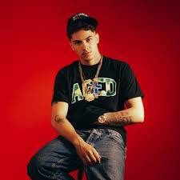

Biografia de Nicolas Vinícius de Oliveira Santos (NS)
Carreira Musical
NS iniciou sua trajetória musical compondo letras de trap e rap durante a adolescência, descobrindo sua
aptidão em batalhas de rima no ambiente escolar. Apesar de afirmar não gostar da própria voz, utiliza
recursos como batidas, autotune e produções digitais para transformar suas letras em músicas. Seu estilo
mistura inglês e português, variando entre trap, R&B e sonoridades underground.
Um compositor jovem e quebrado emocionalmente escreve sua última música antes de tentar acabar com a própria
vida. Antes do pior acontecer, uma garota desconhecida ouve a letra que ele publicou, se conecta com a dor
dele, e decide salvá-lo, mesmo sem nunca tê-lo visto pessoalmente. Juntos, eles constroem algo forte, mas o
passado dele ainda ameaça puxá-lo de volta pra escuridão.
Um compositor jovem e quebrado emocionalmente escreve sua última música antes de tentar acabar com a própria
vida.
Só que antes do pior acontecer, uma garota desconhecida ouve a letra que ele publicou, se conecta com a dor
dele, e decide salvá-lo mesmo sem nunca tê-lo visto pessoalmente.
Juntos, eles constroem algo forte, mas o passado dele ainda ameaça puxá-lo de volta pra escuridão. Nada mais
nada menos do que a historia de Ns com a depressão
Aqui não é só mais um livro, é um mergulho no mundo real do Jahseh — o X. Reflexões sinceras, sem filtro, da
dor que ele carregava, das tretas internas e da luz que ele buscava no meio do caos. Um jovem que
transformou sofrimento em arte, mostrando que atrás da fama tem um cara de verdade, com alma e essência que
nunca morre. Se liga nesse convite: sente essa energia, entende a luta e vibra com quem nunca desistiu,
mesmo quando parecia que o mundo tava contra. Esse é o grito da quebrada, o relato de um mito que vive pra
sempre.
Colaborações
Colab com Dasilva

Colab com PenedoColab com XXXTENTACION
Sobre mim
Nicolas Oliveira , conhecido artisticamente como NS , nasceu em 2009, mas sua alma carrega o peso de muitas
vidas. Nascido e criado na favela, NS é mais do que um artista — é um sobrevivente. Um jovem que aprendeu
cedo que a dor pode ser tinta, que o abandono pode virar poesia, e que o amor, mesmo machucando, ainda vale
ser cantado.
Escritor, compositor e idealista, NS começou a transformar suas vivências em versos ainda muito jovem. A
rua, as quedas, as decepções, os sonhos não realizados e os amores mal resolvidos moldaram sua visão de
mundo e de arte. Suas letras, cruas e verdadeiras, bebem da mesma fonte que artistas como XXXTENTACION , Lil
Peep e BK' , misturando o sombrio da dor com a luz da esperança.
Contato
Para convites, palestras ou colaborações, envie uma mensagem.